只关心点到点
数据链路层的功能
主要任务
- 发送方的网络层将数据包发给数据链路层，数据链路层通过物理层提供的服务将数据传输给接收方的数据链路层，接收方的数据链路层再将数据提供给网络层。
- 在这个过程中，数据链路层需要考虑的问题有：
- 物理层传输的是比特流，因此需要区分不同的数据包的界限
- 传输过程中可能发生的错误
- 发送方和接收方处理数据速率的不同
- 为了方便解决这些问题，数据链路层将网络层提供的每个数据包通过一些增加和修改封装成 帧 frame（也有可能拆分并封装成多个帧），在接收方的数据链路层，这些修改被还原。

- 头部 尾部信息
- payload field就是packet具体的内容
- 需要说明的是，我们可以想象在两个 host 之间的数据链路层直接通信。这是因为，数据链路层无需关心物理层是怎么传输这些信息的；这种“不关心”也是有好处的，因为这说明物理层保证实现方式的任何修改不会影响到数据链路层。

数据链路层在哪里实现
- 路由器router中的线路卡line card
- 大部分在主机host的硬件hardware上，一部分在 software that runs on the host’s CPU
- 在大多数情况下，链路层由网络适配器network adapter实现，有时也称为网络接口卡network interface card（NIC ）。
- 网络适配器的核心是链路层控制器，通常是一个单独的专用芯片，负责实现许多链路层服务（帧、链路访问、流量控制、差错检测等）。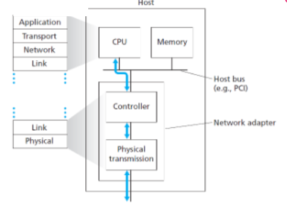
提供给网络层的服务
检错在哪个层都可以做,但是越晚做成本越大.但是过早检错本身也有一个成本.所以就要平衡早晚.
因此数据链路层可以根据需要设计不同的协议，提供的具体服务根据不同的协议有所差异。
物理层提供给数据链路层的服务是单一的：将发送方数据链路层发来的帧想办法发送给接收方的数据链路层
通常，数据链路层可能会提供如下 3 种服务之一：
无确认的无连接服务
Unacknowledged Connectless Service
这种服务不会尝试对丢帧情况进行检查，因此也不可能试图对丢失的数据进行恢复。这种服务适合错误率很低的情况（如光纤传输），或者即时通讯、直播等对即时性要求很高，且偶尔的丢失和错误关系不大的情况。
有确认的无连接服务
Acknowledged Connectless Service
这种服务发送的每一帧需要单独确认；如果发送方发送一个帧后在指定的时间内还没有得到确认，则重新发送该帧。适用于不可靠信道，比如无线系统（802.11 WiFi）。
有确认的面向连接服务
Acknowledged Connect-Oriented Service
这种服务在传输数据前在发送方和接收方之间建立一个连接，保证每个帧都按序、不重复地被接收方接收，传输结束后连接和维护连接的资源被释放。为了保证正确性，双方需要维护一些变量和计数器，记录哪些帧已经收到，哪些还没有收到。适用于长距离且不可靠的链路，如卫星信道和长途电话电路。
成帧
- 成帧 Framing 的核心任务是设计一种方案将比特流划分为帧
- 使得接收方很容易找到每个帧的开始，从而将比特流还原成一个个帧；
- 同时不能占用太多带宽。
我们考察 4 种定界方式。
字节计数法 byte count

- 如图所示，这种方式在每个 frame 的开头用一个 byte 保存这个 frame 的 byte 数目。
- 但是当这个计数值出现错误时，即使接收方通过错误检验发现了错误，也再也无法知道下一帧的开始位置（失去同步 get out of sync）。因此，字节计数法一般不会被采用。
标志字节法 Flag bytes

- 这种方式用一个固定的特殊字节标明帧的头部和尾部，如上图 (a)。这个字节称为 flag byte (FLAG)。
- 当传输的数据内部出现 FLAG 时，用一个转义字节 escape byte (ESC) 在其前面进行标识；同时需要发送 ESC 本身时也在其前面增加一个 ESC，如上图 (b)。这种技术也称为 字节填充 byte stuffing。
- 但是如果要发的数据全都是esc,那就会有百分之百的overhead
标志比特法 Flag bits

- 考虑到帧的划分也可以是比特级的，这种标志和填充也可以精确到比特级。例如 HDLC 的标志方式是：每个帧的开始和结束用序列 01111110 (0x7E 连续的6个1) 标识
- 同时发送方的数据链路层在数据中每发现连续的 5 个 1，发送时就在其后面添加一个 0；接收方的数据链路层在发现 111110 时将最后一个 0 舍弃。这种技术称为 比特填充 bit stuffing。
- 即使发的全是1也只有百分之二十的overhead
- 不太好用软件(字节单位)实现,但是用硬件好实现
物理层编码违禁法 Physical layer coding violations
- 对于 4B/5B 编码方式或者 Manchester 编码，有相当一部分信号组合是不可能出现的。我们可以使用这样的信号组合作为帧的开始和结束。相对于上面两种填充方法，这种方法不再需要填充数据。IEEE 802 标准就采用了这种方法。
- 违反分层原则:下层改变实现细节,不能影响上层调用.但是这个方法的话如果下层修改了编码方式就不行了.但是性能实在优越所以还算常用
检错和纠错
- 信号在传输中有可能出现错误或者丢失。
- 确认:如果我们需要排除丢失的情况，我们可以在协议中要求接收方在收到帧后发回一个确认；发送方得到确认后才可以发下一帧，如果一段时间内没有收到确认则需重新发送。
- 检错与纠错:如果我们需要排除错误的情况，我们可以尝试直接对错误进行恢复[比如wifi]；也可以尝试只检查错误，如果发现错误则要求发送方重传。
- 无论是纠错码还是检错码都无法处理所有可能的错误，因为提供保护的冗余位与数据信息位一样，有可能被接收成错误。
基本定义和原理
codeword码字
如果想要检查一串数据是否出现过错误，我们显然需要一些额外的信息。
- 如果一帧有 m 个数据位存储信息
- 有 r 个冗余位 (redundant / check bits) 用来校验
- 那么这个包含了数据位和冗余位的 n = m + r 位数据块就称为一个 n 位 码字 codeword。
code rate 码率
- 码率 code rate 为 codeword 中数据位所占的比例，即 m/n。通常在越高质量的信道上设计的 code rate 越高，因为相比于有噪声的信道，高质量的信道通常需要更少的冗余位用来检错或纠错。
- 比如光纤这种可能只需要奇偶校验就能检查出来
Hamming distance d海明距离
- 两个等长的码字中不相同的位的个数称为这两个码字的 海明距离 Hamming distance d，代表一个码字需要出现 d 个 1bit 的错误才会变成另一个码字。
- 如果我们想可靠地检测可能的 e 个错误，我们需要一个海明距离为 e + 1 的编码方案（即，任意两个合法码字之间的距离不小于 e + 1）。**
- 因为这样任意 e 个错误不可能将一个合法码字变成另一个合法码字**；
- 当我们发现一个非法码字时，我们就知道出现了错误。
- 如果我们想可靠地纠正可能的 e 个错误，我们需要一个海明距离为 2e + 1 的编码方案。
- 因为这样任意的 e 个错误发生后，原来的码字仍然是离现在的码字距离最近的那一个。
海明距离为3的编码方案,可不可以纠正1个可能错误的同时检测可能的2个错误? 不能
其他概念
纠错码方案的不同特征:
-
块码 block code 是指 r 个校验位是由 m 个数据位按块处理得到的,一次性拿到m个数据,输出n个码字.
-
系统码 systematic code 是指数据位和校验位是分开而没有交叉的；在最终的n位码字中,数据本身是不被改变的
-
线性码 linear code 校验位是对数据位做线性组合得到的
比如汉明码就同时满足上述三种特征. -
现实中常见的错误有两种。
- 第一种是偶现的问题导致单个比特错误；
- 另一种是突发的问题导致一段信息发生错误（不一定每个比特都发生错误）。
- 其他类型错误

纠错码
- 除了卷积码是线性码不是块码以外，其他三种编码都是线性块码。
- 纠错码广泛运用于无线链路。无线链路容易出错，如果没有纠错码很可能获得不到任何完全正确的信息。另外对于单工信道(广播站)的情况，接收方如果检测到了错误也没有办法发回一个重发请求，因此也适用纠错码。
海明码 Hamming codes
- 假设我们需要设计一种编码方案，每个码字有 m 个信息位和 r 个冗余位，并且能够纠正所有的 1bit 错误。加起来应该是n位(m+r)
- 那么对于 2^m 种合法的信息(因为m位信息)，每个信息都应唯一对应 n 个非法码字，它们与该信息的距离为 1。
- n种错误情况+自己本身1种合法情况=n+1种情况,是归给合法信息管辖.因为1bit错误,所以距离为1
- 如果2位: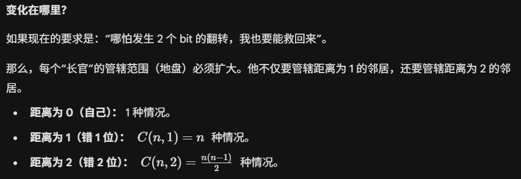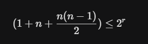
- 要注意的是,是一串码字表示一个信息,而不是一个位表示一个信息.
- 因此这里就共有 (n+1)2^m 种情况，因此有 (n+1)2^m≤2^n，亦即 (m+r+1)≤2^r。在 m 给定的情况下，我们可以通过这一不等式确定 r 的下界[至少要多少个冗余位才能够满足条件]。海明码给出了这一下界的一个获得方式。编码方式见下图。

- 2的幂次方位置上有1的数进行异或,正好得到1101.再跟非2的幂次方位置的数字异或,一定得到0[自己异或自己]
- 如果不是0,疑惑得到的结果就是错误的哪一位.谁翻转了,异或的时候就会露出马脚
一般见到的是偶校验海明码,奇校验海明码就是异或完之后反一下再填到2的幂次方位置
卷积码 convolutional codes

-
卷积码的输出由当前输入和之前若干位输入决定，影响当前输出的此前输入位数称为 约束长度 constraint length。
-
如图这种卷积码的约束长度为 6[就是图上的s1~6]，每个输出 bit 会带来 2 bits 的输出，
- 其中第一个是第 0, 2, 3, 5, 6 位的模二加法[就是异或]（0 指输入位，1
6 指 S1S6 的值）， - 第二个是第 0, 1, 2, 3, 6 位的模二加法。
- 其中第一个是第 0, 2, 3, 5, 6 位的模二加法[就是异或]（0 指输入位，1
-
比如输入序列为 111，输入第一个 1 时 0
6 位是 1000000，因此输出是 11，然后 S1S6 右移一位变成 100000；输入第二个 1 时为 1100000，因此输出是 10；输入第三个 1 时为 1110000，因此输出是 01。因此编码后为 111001。 -
一个输入码可以得到两个输出结果,3bit可以得到6bit的冗余数据.
-
卷积码的解码是通过最大似然法。在所有可能的输出序列中找出与接收到的序列最相近的那一个，解码为这个序列对应的输入序列。
-

里所罗门码 Reed-Solomon codes
低密度奇偶校验码 LDPC, Low-Density Parity Check
检错码
- 光纤和高品质铜线的错误率较低，因此对偶现的错误进行检错和重传更加有效。下面介绍三种检错码，它们都是线性的系统块码。
奇偶校验位 parity bit
- n-1 位信息，1 位冗余。
- 奇校验码：在加上该位后 ,1的个数为奇数；
- 偶校验码: 在加上该位后,1的个数则为偶数。
- 交错校验 interleaving 技术可以一定程度上防止突发的若干比特范围内[如果发生偶数个反转,就检测不出来了]的错误。将数据块作为 k 行 n 列处理，每列计算一个 parity bit 后附在数据块最后发送。这样除非突发错误持续 n 个 bit 以上，否则仍然可以被检测出来。
- 横着发,竖着验,可以避免一行连续错误.这里考虑的是单次干扰,不考虑一个错了之后隔了n个又错一个的这种情况

校验和 checksum
- 对数据进行一些求和运算。然后得到结果后,到那边看看结果还一不一样.
- 奇偶校验位也可以看做校验和的一个例子。
- 另一个实际例子是 Internet Checksum。规则是：
- 首先将数据分割成 16 bit 的若干段（最后一段不足 16 bit 则在末尾补 0）；
- 然后将这些段相加，最高位进位 wrap around[最高位的进位再加回最低位]
- 最后将结果按位取反 (?) 作为校验。
- 检查时再次计算数据之和，加上校验，如果结果不为全 1 则发生过错误。[取反之后加上原数字,当然全为1了] [如果传输过程中哪个位翻转了,那么当然破坏了完美的互补]
- 解释 wrap-around carry bit (src)

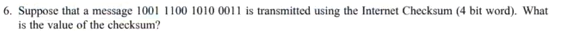
1001+1100=10101=0101+1=0110
0110+1010=0001
0001+0011=0100 这个得到的就叫checksum,但是放到帧里去用的时候需要取反
循环冗余码 CRC, Cyclic Redundancy Code
- 又称 多项式码 polynomial code，计算方式见下图。其中 G(x) 是发送方和接收方预先商定的一个多项式，称为 生成多项式 generator polynomial，其最高位和最低位一定是 1。


- 将除数转换成多项式,n位除数,最高次项就是n-1,然后给被除数末尾添上n-1个0.然后正式开始除法之后,加法和减法全都视为异或进行计算.
- 由于模 2 除法的一些性质，这种方法有优秀的检测能力，具体可以参看中文课本 166~167 页。
例题
- 一个比特流
10011101使用文中描述的标准 CRC 方法进行传输。生成多项式为 。- 展示实际传输的比特串。
- 假设在传输过程中，从左边数的第 3 个比特发生了反转（0变1，或1变0）。证明接收端能检测出这个错误。
- 给出一个接收端无法检测到的比特错误示例。
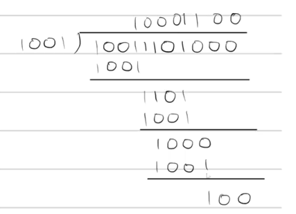
- 实际传输的比特串 = 原始数据 + 余数 =
10011101+100=10011101100.
- 也就是说 最终的比特串是可以整除除数的.那么发生了错误之后自然不能整除.
- 如果比特串错误的部分正好可以符合整数倍除数,那就不能被检测出来
流量控制与一些基本协议
考虑单工停等协议:单工simplex,停等stop and wait
这里的单工是只发消息,那边往回发一个确认,发送方得到确认后才会发下一个帧.
一些单工协议
一个乌托邦式的单工协议
A Utopian Simplex Protocol
- 发送方不断地从网络层获取数据包并构造一个帧，通过物理层发送该帧；
- 接收方不断等待唯一可能的事件 FRAME_ARRIVAL 发生，将该帧从物理层取得，处理后将数据部分发送给网络层。这种方案的问题是，如果发送方发送帧的速度大于接收方处理的速度，接收方就会被淹没 (flood)。
无错信道上的单工停-等协议
A Simplex Stop-and-Wait Protocol for an Error-Free Channel
- 接收方每当接收一个帧并处理完成后，发回一个确认帧；
- 发送方在收到确认帧后（不需要处理，因为此时唯一的可能就是确认帧），则可以发送下一帧。这种协议在数据传输上是单工[发”数据消息”确实是单向的]的，但是接收方需要发回消息，因此需要使用半双工信道。
- 这种方案的实际问题在于，没有考虑出现错误的情况。
有错信道上的单工停-等协议
A Simplex Stop-and-Wait Protocol for a Noisy Channel
这种协议在上一种的基础上考虑 3 种可能的错误
- 接收到的帧检出错误
- 为了解决第 1 种错误，我们引入一个新的事件 CKSUM_ERR 表示校验和有误；
- 因而接收方在收到一个帧后应当校验正确性，发回一个表示正确或者错误的确认帧；
- 如果检出错误，则直接抛弃该帧等待重传。如果发送方收到了表示错误的确认帧导致事件 CKSUM_ERR 发生，那么发送方将重新发送上一帧。
- 发送方发送的帧完全丢失
- 对于第 2 种错误，接收方完全没有接到一个帧，因而也不可能对此作出确认。
- 为了避免这种情况，发送方每次发送一个帧后启动或重置一个计时器，这个计时器的时间应当长于预期正常情况下收到确认帧的时间。
- 如果计时器超时发送方仍未收到确认帧（事件 TIMEOUT），那么第 2 种错误有可能发生，此时发送方会将（缓存下来的）刚刚发出去的那一帧重新发出一次。
- 直至发送方收到一个积极的确认帧，此时发送方再加载下一帧，上一帧的缓存即可以被覆盖掉。
- 接收方的确认帧丢失
- 但是需要考虑的是，除了第 2 种错误，这种问题也可能导致发送方没有收到确认帧，因此可能会将一个正确收到（没有被抛弃）的帧重发，导致接收方收到两个该帧；如果不加限制，接收方的网络层则可能收到重复两次的该数据段，引起错误。
- 我们需要防止这种重复的发生。考虑到发送方发送第 i + 1 帧的充要条件是第 i 帧已经收到了正确的确认，而这一确认的必要条件是接收方已经正确收到了第 i 帧。因此我们只需记录每一帧序号的奇偶性，并将其包含在帧头中（称为字段 seq ）。
- 如果接收方接收到了预期的（与前一帧相反的）奇偶标记，那么就将其保存；否则就说明前一帧被重复发送了，此时则直接抛弃该帧，同时发回一个确认（作为对前一个丢失确认帧的补充）。
- 这种在接收到肯定确认之前定时重传的协议也称为 自动重复请求 ARQ, Automatic Repeat reQuest 或 带重传的肯定确认 PAR, Positive Acknowledgement with Retransmission。
捎带确认 piggybacking
- 需要注意的一个问题是，前面两种带有确认的协议都需要使用半双工传输，而这种传输和全双工传输一样都需要往返两条信道；因此实际上同一条链路最好用来往返传输数据。这种情况下，某一帧的接收方就可以把该帧的确认包含在它发回的另一帧的帧头中，这种方式就称为捎带确认[驮运]。
- 捎带确认引入的另一个问题是，需要发回确认的那一方并不知道网络层什么时候会让它发送下一个数据包，以便它将确认包含在其帧头中（称为字段 ack）。[打不到车]
- 为了解决这个问题，发回确认的那一方也可以设置一个计时器，在计时器结束前如果网络层交付了一个数据包让它发送，那么就将确认包含在其中；否则就直接发送一个单独的确认帧。
- 一个捎带确认的双工停-等协议

- 收到0 就发一个ack0表示希望下一个是1
滑动窗口协议 Sliding Window Protocols
基本思想
- 在现实世界中，帧送往接收方途中和确认帧返回发送方的时间[两个灰色]可能比发出一个帧[仅指推上传送带的过程,绿色]的时间长出很多
- 这会导致带宽的利用率很低。因此我们引出滑动窗口协议。
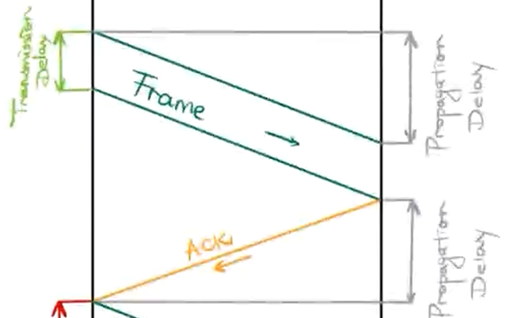
- 这会导致带宽的利用率很低。因此我们引出滑动窗口协议。
- 滑动窗口协议的基本思想
- 发送窗口 sending window任意时刻发送方维护一组允许发送的帧的序号（同样用 seq 字段保存，但这时可能不止 1 个 bit）
- 接收窗口 receiving window接收方维护一组允许接收的帧的序号.
- 这两个窗口的大小不必相同，但是是固定的。
- 发送方一个每收到确认帧，就将发送窗口向前滑动一个位置；如果没有可以发送的帧（即发送了窗口大小那么多的帧但是还没有收到确认）就停止发送（定时重发）
- 接收方每收到一个帧，如果在接收窗口内则接收，否则丢弃。
- 事实上，stop-and-wait 协议就可以视为是发送和接收窗口大小均为 1 的滑动窗口协议。
- 需要再次注意的是，接收方的数据链路层需要尽可能将数据包按正确的顺序传递给网络层。
- 关于窗口大小的理论分析（更正：ACK 0 应当是 ACK 1）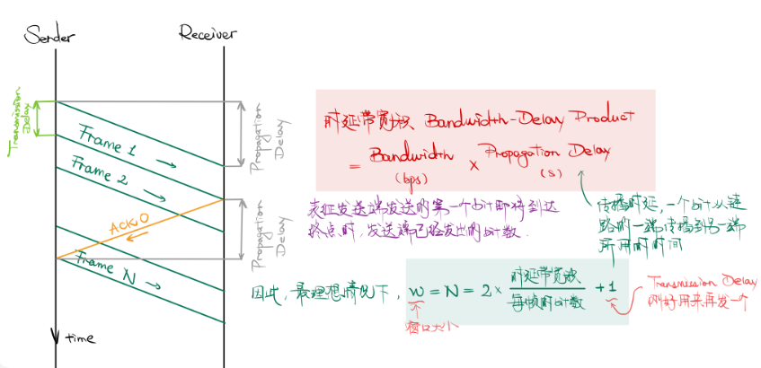
- 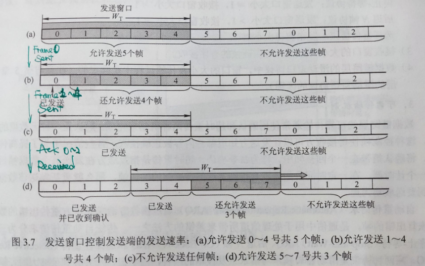
- 根据上面的理论分析，我们定义 链路利用率 Line Utilization = Frame Length / (Frame Length + 2 * Bandwidth * Propagation Delay)更常见的表述是 Line Utilization = Frame Length / (Frame Length + Bandwidth * Round-Trip Delay)。
- 进一步我们定义 链路吞吐率 Throughput = Utilization * Sending Data Rate
回退 N 协议 GBN, Go-Back-N
- 回退 N 协议是一种滑动窗口协议；其中 N 代表 sending window 的大小，而这种协议中 receiving window 的大小始终为 1。当当前 sending window 的第一帧的计时器（实际上每一帧发出后都启动一个独立的计时器）超时仍未得到 ACK 时，回退 N 位到 sending window 的开头重新发送这 N 帧；而由于 receiving window 的大小是 1，因此提前到达的帧都会被抛弃。如下图。
- 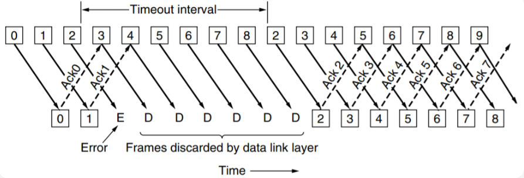
- 另外引入一种确认方式：累计确认 cumulative acknowledgement，这种确认方式为：当接收方发回 ACK n 的确认，其中表示 n 和 n 之前的所有帧都已经收到；如果 n 之前有任何没有收到的帧，则 ACK n 不会被发出。
- 考虑 GBN 中 seq 段 bit 数和 N 的关系。如果 seq 的取值为 0~MAX_SEQ，即共有 1 + MAX_SEQ = 2^size_in_bit(seq) 种取值，那么 N 最大为 MAX_SEQ 而不能是 1 + MAX_SEQ。
- 考虑这样的一个情况。假如 MAX_SEQ 是 7，而 N (i.e. sending window size) 是 8；发送方一次性发出了 0~7 这 8 个帧，而接收方发回的 8 个确认帧全部丢失了；那么发送方认为得超时重传0号帧,接收方认为刚才都确认了,要等全新的0号帧
- 接着发送方重发了这些帧，而此时接收方以为这是全新的 8 个帧，导致了传递给网络层的数据出现了重复。因此 N 不能是 8。
选择重传协议 SR, Selective Repeat
- 如果错误很少发生，那么 GBN 是一个良好的策略；而当错误频繁发生，GBN 的重发方式会浪费大量的带宽。GBN 协议可以有两种思路的优化。
- 当接收方发现了发来的帧有错误或者不是所期待的那个帧时，发送一个否定的确认信息 NAK, Negative Acknowledgement 并说明想要的下一帧，这样可以不用等到 timeout 再回退重发；
- 增大 receiving window size，这样当错误发生时可以先缓存一部分发来的后面的帧，这样发送方只需重发 NAK 的帧即可。
- 综合上述两种优化和累计确认的一个例子如下；这就是 选择重传协议。
- 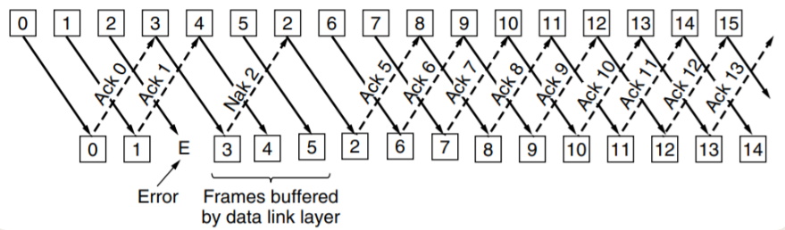
- 选择重传协议对每一帧只发送一个 NAK，防止一次性发送大量相同 NAK 的情况。但是，这也有可能带来问题。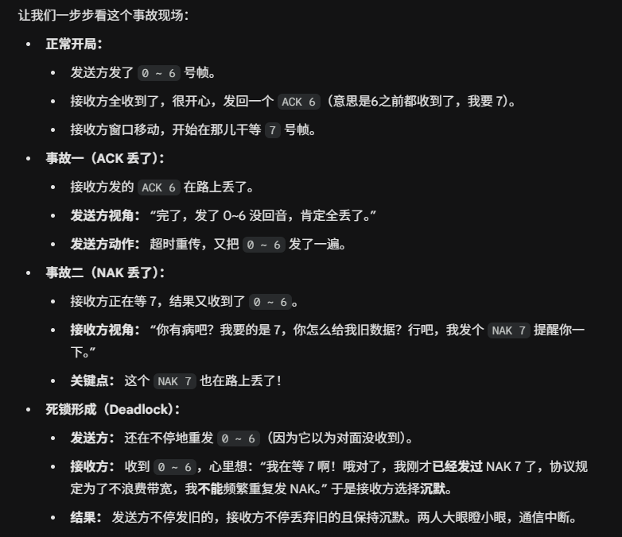解决方法: 当接收方收到“非预期”的帧（比如我要 7，你给我 0），并且发现自己已经发过 NAK 了，它就启动一个 辅助计时器。如果计时器时间到了（Expires），还没收到 7，接收方就会强制再发一次 ACK/NAK。
- 接收窗口的大小不能大于 (MAX_SEQ + 1) / 2。一般来说，选择重传协议的接收窗口和发送窗口的大小是一样的。如果窗口跨度太大,就会把旧帧当作下一轮的新帧缓存起来,导致数据错乱,所以SR大小必须减半,保证新旧序号在窗口中绝对不会重叠.
点对点传输协议实例
高级数据链路控制 HDLC, High-Level Data Link Control
- HDLC 是一种 bit-oriented protocol，使用全双工通信；有顺序编号和校验，传输可靠性高。其帧结构如下图
- 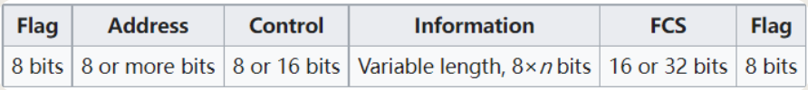
- 每个帧的开始和结束用序列 01111110 (0x7E) 标识。
- 同时发送方的数据链路层在数据中每发现连续的 5 个 1，发送时就在其后面添加一个 0；
- 接收方的数据链路层在发现 111110 时将最后一个 0 舍弃。
- 这样整个帧中只会有头和尾的 FLAG 有 01111110 这样的序列了。
- 当链路上没有需要传输的内容时，HDLC 也会通过不断发送形式为 01111110 的帧以保持双方的同步。（实际上，HDLC 最开始是作为 SDLC, Synchronous Data Link Control 被提出的。）
- 按照 Control 字段的前 2 个 bit 可以将 HDLC 帧划分为 3 类：
- 信息帧 Information frame，第 1 位是 0，用来承载正常的信息；
- 管理帧 Supervisory frame，前两位是 10，用来进行流量控制和差错控制，如单独的 ACK、NAK 等；这种帧没有 Information 字段；
- 无编号帧 Un-numbered frame，前两位是 11，用来进行其他的功能，如链路管理等。
- FCS 是根据 Address, Control 和 Information 字段计算 CRC 的结果。
点对点协议 PPP, Point-to-Point Protocol
- PPP 是一种 byte-oriented protocol。HDLC 提供了可靠的数据传输；而 PPP 通常不编号、提供一种无连接无确认的服务。
- PPP 协议有 3 个组成部分：
- 一种成帧方法。
- 链路控制协议 LCP, Link Control Protocol，用于启动、测试、配置（协商参数）、关闭链路。
- 网络控制协议 NCP, Network Control Protocol。
PPP 是由 SLIP 发展而来的；
SLIP 的问题在于它只能用于传送 IP Packet；
PPP 则支持对于网络层运行其他协议以及两端网络层运行的协议不同的情况下仍使用 PPP 进行传输。
对于每一个支持的网路层协议，都有一个相应的 NCP 进行配置。其帧结构如下：
- 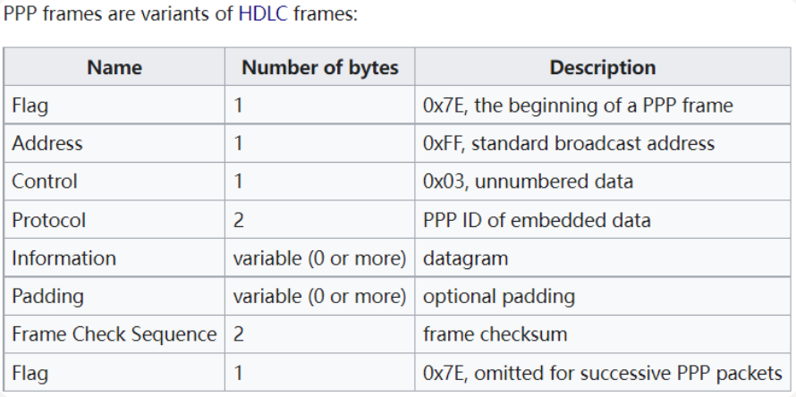
- 前后的 FLAG 都沿用 HDLC 的 0x7E，但填充方式有所不同。PPP 是 byte-oriented 的，因此使用 byte stuffing。
- 在数据中发现的 0x7E 将被替换为 0x7D 0x5E 两个字节；
- 而 0x7D 将被替换为 0x7D 0x5D。这样可以保证唯一出现 0x7E 的地方就是帧的开始和结束。
- Address 段始终为 0xFF，表示广播，即所有计算机都接收；
- Control 的值为 0x03，表示这是一个无编号帧；由于这两个字段的值始终为定值，因此可以通过 LCP 协商省略这两个字段。
- Protocol 包含关于 LCP 和 NCP 的信息，默认 2 byte，但是可以通过 LCP 协商为 1 byte；
- Information 的默认长度是 1500 byte，但是也可以通过 LCP 协商，可能利用 Padding 进行填充以满足长度要求；
- Frame Check Sequence 默认 2 byte，但是也可以协商使用 4 byte，也是 CRC。
- 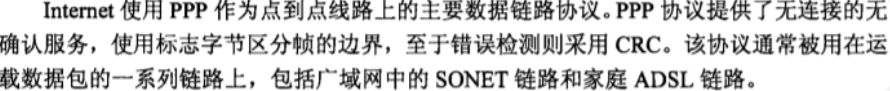
- PPP 协议在用于不同链路上时可能也有不同的成帧方式。例如 PPP 用于 SONET 等同步链路时会使用 HDLC 那样的 bit stuffing 而不是 byte stuffing；用于 SONET 时还需要进行链路的建立以及扰码 (scrambling)。
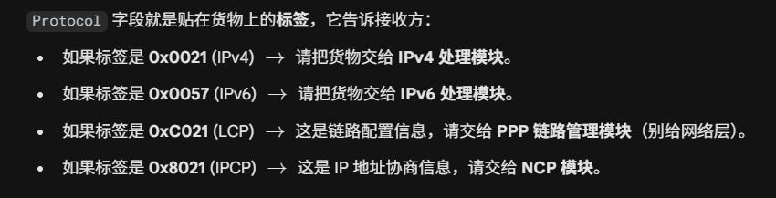